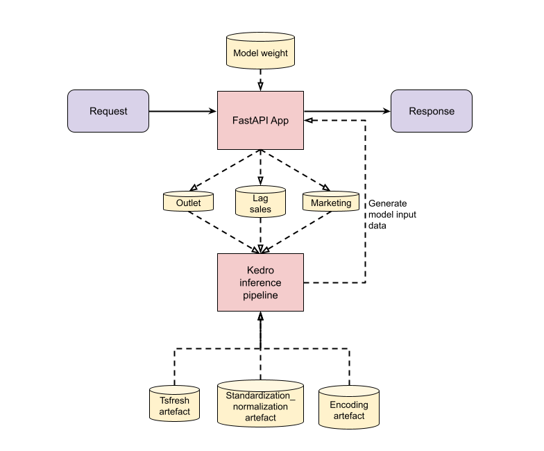

Inference Module#
This document provides detailed information on the inference module. Ensure you’ve followed the Environment Setup before diving in.
Overview#
The Inference Module is responsible for executing model predictions. The given input data via the API request is converted into 3 CSV files - marketing, lag sales, and outlet. These are then used as inputs to the Kedro-based inference pipeline to generate the model input data to be used by the loaded model for prediction. The output predictions may be utilised in various downstream applications.
Note that a Kedro SequentialRunner object is used to execute the Kedro pipeline, as the inference pipeline’s inputs are generated by a prior process from the API request. Thus, the
kedro runcommand which is executed in the terminal for the data and training pipelines is now executed within a script, as it is a downstream process following the conversion of the API request into CSV files.

Pipeline Configuration#
The module relies on configuration settings to define its behaviour and integrate with other components. The primary configuration for the application is defined in the src/bipo_fastapi/config.py file.
When initializing, the module first checks for the presence of environment variables corresponding to each setting. If an environment variable is present, its value is used; otherwise, the default value from config.py is taken.
Parameter |
Type |
Description |
Environment Variable |
Default Value |
|---|---|---|---|---|
API_NAME |
str |
The name of the API |
API_NAME |
BIPO FastAPI |
API_VERSION |
str |
The version of the API |
API_VERSION |
/api/v1 |
INTERMEDIATE_OUTPUT_PATH |
str |
Path to output intermediate files |
INTERMEDIATE_OUTPUT_PATH |
../data/08_model_inference_output |
PRED_MODEL_PATH |
str |
Path to the prediction model file |
PRED_MODEL_PATH |
../models/orderedmodel_prob_20231019.pkl |
PRED_MODEL_UUID |
str |
UUID of the prediction model |
PRED_MODEL_UUID |
“0.1” |
SALES_CLASS_NAMES |
List[str] |
Names of the sales classes |
(Derived from |
[“Low”, “Medium”, “High”, “Exceptional”] |
File Structure in Container#
The following file structure depicts the key directories and files contained in the containerised inference submodule. This is not the same directory with the host computer on which Docker is running.
Prerequisites#
If it is the first time running the model serving (inference) container on the current environment, please perform the steps below.
Create the necessary subdirectories in
data/08_model_inference_output.Ensure that there is one non-empty CSV file in each of the
inference_lag_sales_data,inference_mkt_data,inference_outlet_datadirectories before running the inference pipeline. Otherwise, create one non-empty CSV file in each of the 3 directories as they cannot be empty. The non-empty CSV file may contain zero rows, but must include at least one column.
├──/app/bipo_demand_forecasting/
├── conf/
├── data/
| └── 08_model_inference_output/
| ├── ebm_explanation
| ├── encoding_artefact
| ├── inference_lag_sales_data
| ├── inference_mkt_data
| ├── inference_outlet_data
| └── std_norm_artefact
├── docker/
├── models/
├── logs/
│ ├── info.log
│ └── error.log
├── scripts/
└── src/
├── bipo/
│ └── pipelines/
│ └── ...
├── bipo_fastapi/
│ ├── v1/ (model inference)
| │ └── routers/ (code separation into multiple files)
│ ├── common.py
│ ├── config.py
│ ├── custom_dataset.py
│ ├── deps.py
│ ├── hooks.py
│ ├── load_data_catalog.py
│ ├── main.py
│ ├── nodes.py
│ ├── pipeline.py
│ └── schemas.py
├── requirements.txt
└── utils.py
Input(s)#
Component |
Description |
Data Directory |
|---|---|---|
Marketing CSV file |
Marketing CSV generated from the request and used in Kedro inference pipeline. |
data/08_model_inference_output/inference_mkt_data/inference_mkt_data.csv |
Lag sales CSV file |
Lag sales CSV generated from the request and used in Kedro inference pipeline. |
data/08_model_inference_output/inference_lag_sales_data/inference_lag_sales_data.csv |
Outlet CSV file |
Outlet CSV generated from the request and used in Kedro inference pipeline. |
data/08_model_inference_output/inference_outlet_data/inference_outlet_data.csv |
Trained model weights |
Model weights in |
models/ |
Feature encoding artefact |
Directory containing the feature encoding artefact in |
data/08_model_inference_output/encoding_artefact |
Standardization/ normalization artefact |
Directory containing the standardization/normalization artefact in |
data/08_model_inference_output/std_norm_artefact |
tsfresh artefact |
Directory containing the tsfresh JSON artefact. This file is generated only when tsfresh is used in the data pipeline for generation of datasets for model training. Refer to the Data Pipeline documentation. |
data/05_feature_engineering/tsfresh_features/artefacts/tsfresh_relevant_features |
Output(s)#
Component |
Description |
Data Directory |
|---|---|---|
Model input data |
In memory dataframe generated by kedro inference pipeline, which is used by the loaded model in the FastAPI app to make predictions. |
None; in memory |
1. FastAPI app#
Scripts |
Description |
|---|---|
src/bipo_fastapi/ |
Contains all Python scripts related to the inference pipeline |
|
FastAPI router for model prediction |
|
Common functions which are used to generate default API values and EBM prediction explainability |
|
Defines the application’s default settings |
|
Make predictions with the trained model, which is called by |
|
Application entrypoint |
|
Contains the Pydantic schema of the request fields, which is used to validate the user request input |
2. Kedro pipeline#
Scripts |
Description |
|---|---|
src/bipo_fastapi/ |
Contains all Python scripts related to the inference pipeline |
|
Defines a custom CSV dataset class to provide additional load arguments when loading a CSV dataset for Kedro’s |
|
Kedro hooks for modifying node inputs, and logging purposes |
|
Loads the data catalog, as the Kedro runner object does not make use of the |
|
Functions used as nodes in the inference pipeline |
|
Consists of pipelines to generate model input data for model prediction. It is divided into 2 main pipelines:
|
Configuration#
This section captures some of the key parameters from the parameters.yml, inference_parameters.yml and constants.yml files.
As much as possible, key functions from the data pipeline are reused. Their configurations will be governed by their respective implementations in the data pipeline.
Key Function from Data Pipeline |
Location |
|---|---|
|
src/bipo/pipelines/data_loader/nodes |
|
src/bipo/pipelines/time_agnostic_feature_engineering/nodes |
|
src/bipo/pipelines/time_agnostic_feature_engineering/nodes |
|
src/bipo/pipelines/feature_engineering/nodes |
|
src/bipo/pipelines/feature_engineering/tsfresh_node |
|
src/bipo/pipelines/time_agnostic_feature_engineering/feature_indicator_diff_creation |
|
src/bipo/pipelines/feature_engineering/encoding |
|
src/bipo/pipelines/feature_engineering/encoding |
|
src/bipo/pipelines/feature_engineering/standardize_normalize |
Key Parameters in parameters.yml#
Parameter |
Type |
Description |
Default Value |
|---|---|---|---|
|
|
EBM explainability output type |
‘html’ |
|
|
Whether to include adstock features for inference |
True |
Key Parameters in inference_parameters.yml#
default_request_fields contains the default values in the API request.
Parameter |
Type |
Description |
Default Value |
|---|---|---|---|
|
|
Number of days of lookback period. This is used in |
14 |
|
|
Minimum number of lag days in user request input |
7 |
|
|
File path of the model used for prediction |
‘models/ebm_20231019.pkl’ |
|
|
A list of unnecessary column names to drop in the final processing step before data is used as model input for prediction |
|
|
|
A list of column names to be converted from boolean to numeric |
|
|
|
Whether to include tsfresh features for inference. Must match the loaded model weight (e.g. if loaded model is trained on tsfresh features, then this parameter has to be |
True |
|
|
Fold ID of the best performing fold |
‘fold1’ |
|
|
Whether to enable ebm explainability for predictions |
True |
Key Parameters in constants.yml#
Note: Please avoid making alterations to these parameters, as any modifications can significantly impact the pipeline and potentially lead to failures.
Parameter |
Type |
Description |
Default Value |
|---|---|---|---|
|
|
Name of lag sales CSV file that is generated from API request |
inference_lag_sales_data |
|
|
Name of marketing CSV file that is generated from API request |
inference_mkt_data |
|
|
Name of outlet CSV file that is generated from API request |
inference_outlet_data |
|
|
Filepath of marketing CSV file that is generated from API request |
data/08_model_inference_output/inference_mkt_data/inference_mkt_data.CSV |
|
|
Filepath of lag sales CSV file that is generated from API request |
data/08_model_inference_output/inference_lag_sales_data/inference_lag_sales_data.CSV |
|
|
Filepath of outlet CSV file that is generated from API request |
data/08_model_inference_output/inference_outlet_data/inference_outlet_data.CSV |
|
|
Directory filepath of lag sales CSV file that is generated from API request |
data/08_model_inference_output/inference_lag_sales_data |
|
|
Filepath of tsfresh artefact |
data/05_feature_engineering/tsfresh_features/artefacts/tsfresh_relevant_features |
|
|
Filepath of standardization/normalization artefact. |
data/08_model_inference_output/std_norm_artefact |
|
|
Filepath of encoding artefact |
data/08_model_inference_output/encoding_artefact |
|
|
Filepath of EBM explainability |
data/08_model_inference_output/ebm_explanation |